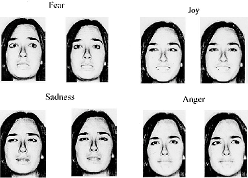
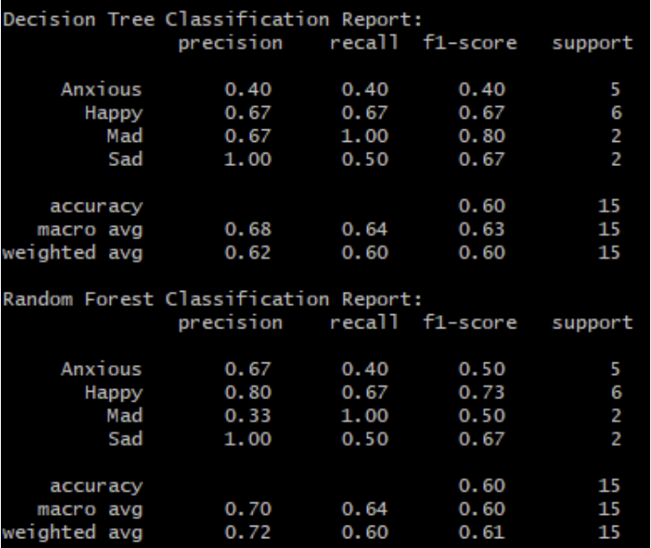
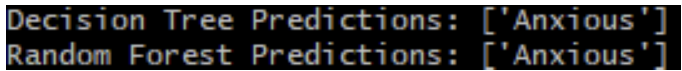

This page is dedicated to document my personal work on the larger project Sentiment Voice Analysis, a Virtual Reality experience that integrates user emotions into an adaptive environment, aimed to shed light on emotional data tracking for public awareness and engagement. The project is a collaborative effort among several engineers and artists.
02/01/2024 update
Today I collected data for 4 emotions [happy,sad,mad,anxious]. Currently, the Unity project runs through each emotion 5 times for a total of 24 data points. I did this process twice on my face so I had 48 data points. I trained the model with 47 data points leaving out 1 data point for testing.
After training the model with these points here were the results after running emotionclassifier.py.

Then taking the models and making a prediction on the data point I left out I recorded this after running prediction.py.

Both random forest and decision tree models correctly predicted the 'anxious' expression.
Working on this project has created an inner dialouge about the societal impact of software development. These thoughts have manifested themself into spreading awareness within my community and building an emotion predicting model. Currently, I am collecting facial tracking data from the Meta Quest Pro to create a machine learning model that will predict the emotionof the user. The GitHub link above has the python code needed to generate the model. All that is needed is the data.
"And while there is an enormous structural power asymmetry between the surveillers and surveilled, neither are those with the greatest power free from being haunted by a very particular kind of data anxiety: that no matter how much data they have, it is always incomplete, and the sheer volume can overwhelm the critical signals in a fog of possible correlations."
Kate Crawford